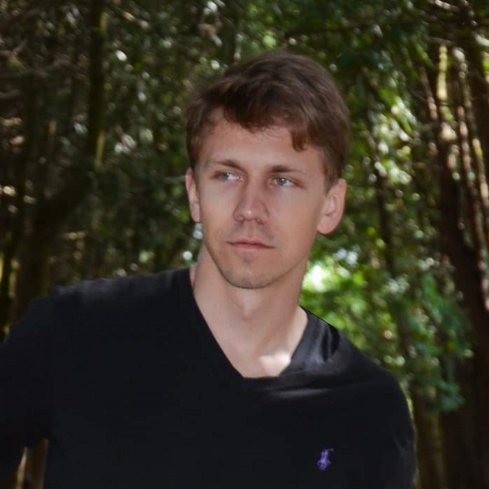

 Režisors | Tehniskais redaktors
Artūrs Andersons
arturs.s.andersons@gmail.comDarba pieredze
- 2020.g. - pašlaik: Ziņu portāla LSM satura tehniskais redaktors
- 2019.g. - 2020.g. SIA "Nordic Industries" skatuves iekārtu meistars
- 2017.g. - 2019.g. SIA "RiaTech" Dokumentu arhīva vadītājs
Izglītība
- 2013.g. - 2021.g.: RISEBA, Bakalaura grāds TV un Kino režijā
- 2001-2013.g. - Rīgas Hanzas vidusskola
Prasmes
- "B" kategorijas auto vadītāja apliecība
- Vokālās nodarbības Latvijas Nacionālajā operā
- Ģitārspēles prasme
Biežāk uzdotie jautājumi
Ar ko es nodarbojos brīvajā laikā?
- Dziedu
- Spēlēju ģitāru
- Lasu grāmatas
- Skrienu
- Režisēju filmas
Valodas
- Latviešu valoda - dzimtā
- Angļu valoda - B2
- Krievu valoda - B1
Sazinies ar mani
- Tel. +371 29337089
- E-pasts: arturs.s.andersons@gmail.com
- Rudzāju iela 15, Rāmava